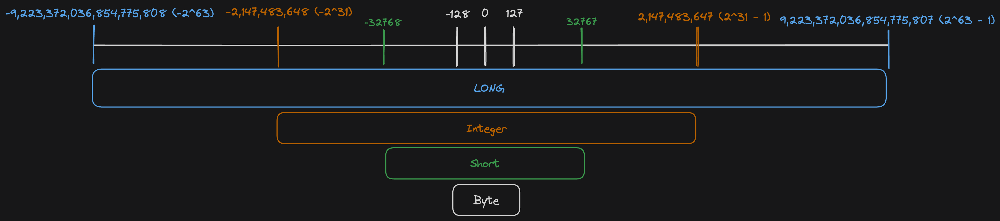

Kotlin Fundamentals - Numbers
Introduction
Kotlin has several different data types for numbers. This blog post provides some basic information on how they look like and how they can be used. Additionally it discusses basic concepts which are new in Kotlin.
Integer
The default types for Integers are signed. This means they have a range from negative to positive values.
- Byte (8 Bit) from -128 until 127
- Short (16 Bit) from -32768 until 32767
- Int (32 Bit) from -2,147,483,648 (-2^31) until 2,147,483,647 (2^31 - 1)
- Long (64 Bit) from -9,223,372,036,854,775,808 (-2^63) until 9,223,372,036,854,775,807 (2^63 - 1)
If you initialise a variable without an explicit type, the compiler infers the type from the smallest range not exceeding Int. If it exceeds Int it is a Long value. This means that val myNumber = 1 infers the type Int for myNumber even though it would fit into a Byteor Short type. As soon as you have a value bigger than int e.g. val myNumber = 4000000000 it is with type Long.
It is important to understand that in Kotlin every number type is an Object. There are no primitive types as in Java.
Nevertheless they are compiled into a primitive Java type as long as they are not nullable.
Nullable numbers in Kotlin are compiled into boxed Java Classes representations.
var myInt = 1 // compiled to the primitive integer value
var myInt: Int? = null // compiled to a object wrapped IntegerFloat
In contrast to the four different number types for Integer numbers, Kotlin provides two for floating numbers.
Float32 Bits -> Significant Bits: 24, Exponent Bits: 8, decimal digits: 6-7Double64 Bits -> Signifcant Bits: 53, Exponent Bits: 11, decimal digits: 15-16
println(Float.MIN_VALUE) // 1.4E-45
println(Float.MAX_VALUE) // 3.4028235e38
println(Double.MIN_VALUE) // 4.9E-324
println(Double.MAX_VALUE) // 1.7976931348623157E308The E-Notation explained in short: The e stands for "number times ten to the power of ...". So for example it is 3.4028235 times ten to the power of 38. So you would shift the . for 38 positions to the right. In the example this would result in 340 282 350 000 000 000 000 000 000 000 000 000 000.
Kotlin goes with double as the default floating number, if the compiler infers the type.
It is important to know that Kotlin does not have implicit widening or conversion of numbers.
Every number needs to be explicitly converted to be used with a different number type.
val i = 42
val d = 42.0
val equal = i == d // does not work as Int and Double can not be compared
val equalTwo = i == d.toInt() // would work as double is converted to Int.Interesting to know
JVM representation
On the JVM platform numbers are stored in their primitive types. Int -> int or Double -> double. If you mark a number as nullable Int? it will be boxed in the Java Classes Integer, Double respectively.
Bit operations
Bit operations e.g. shl or shr etc. See a full list in the docs.
Float comparison
If the operands are statically known as Float or Double, the operations follow the IEE 754 Standard.
Conclusion
The Kotlin implementation for numbers is convenient to use, but in details complex. I tried to come up with an overview image of the different ranges of existing number types.

Published 27 Dec 2024